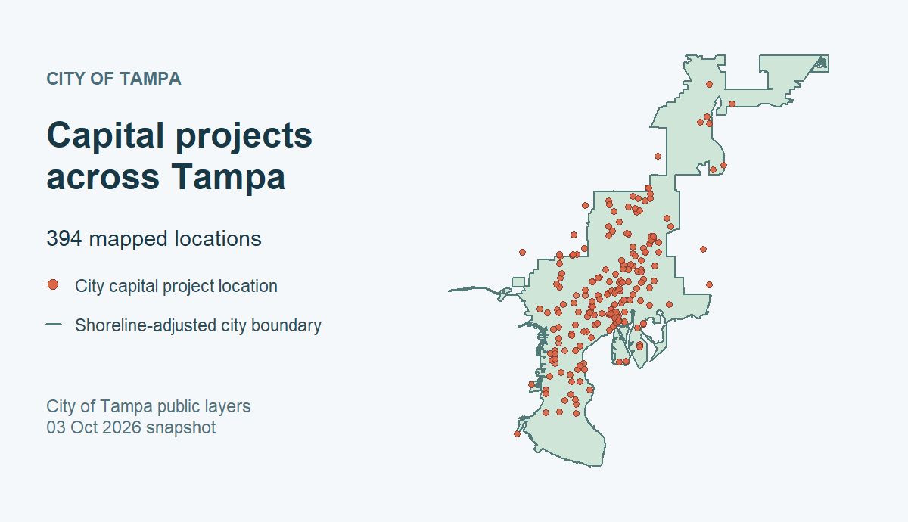

Explore infrastructure and capital projects
Source:vignettes/infrastructure-projects.Rmd
infrastructure-projects.RmdWhich kinds of capital work appear on a public map, and where are their locations? This tutorial uses the checked City of Tampa capital improvement projects layer to explore those questions. The layer contains mapped features with project type, phase, status, location, dates, and cost fields. Its service description identifies a public-facing selection; it is not the City’s full capital ledger. A map feature is also not necessarily one project.
The catalog and field-inspection chunks below run entirely offline.
Retrieval, summaries, and the ggplot2 chart are shown as
code to run in your own R session. They do not contact
the publisher during vignette or website builds, so this page makes no
claim about current counts or project status.
Set up and find a source
Install the package from its GitHub repository if needed.
knitr formats the tables and ggplot2 draws the
chart; neither is a required package import.
install.packages("pak") # if needed
pak::pak("Jaclenga/tampaBayOpenData")
install.packages("knitr") # for the summary tables
install.packages("ggplot2") # optional chart dependencySearch the bundled checked catalog without sending a request. The search term can surface projects from more than one publisher; the example selects the Tampa layer by its stable package ID.
library(tampaBayOpenData)
choices <- tbod_search_datasets("project", source = "checked")
knitr::kable(choices[, c("id", "title", "publisher", "category")],
caption = "Checked project-related layers in this package")| id | title | publisher | category |
|---|---|---|---|
| capital-projects | Capital improvement projects | City of Tampa | Infrastructure |
| stpete-public-works-projects | St. Petersburg mapped public works projects | City of St. Petersburg | Infrastructure |
Checked entries are selected references, not a full inventory of
either publisher’s projects. source = "live" can discover
other indexed layers, but portal searches are bounded and may miss
items; see live discovery. The Data Coverage dashboard explains what “checked”
verifies.
Read the source and scope note before analyzing records. The
verified date is an endpoint check, not
the date of the most recent project update.
info <- tbod_dataset_info("capital-projects")
info[c("title", "publisher", "source_url", "verified", "scope_note")]
#> $title
#> [1] "Capital improvement projects"
#>
#> $publisher
#> [1] "City of Tampa"
#>
#> $source_url
#> [1] "https://tampa.maps.arcgis.com/home/item.html?id=2226a20de08641e38cedd1c2d7cac69e"
#>
#> $verified
#> [1] "2026-09-29"
#>
#> $scope_note
#> [1] "The service description says its definition query selects Show to Public = Yes, while the layer metadata does not expose that definition expression. Coordinates use ArcGIS WKID 103023 / latestWKID 6443, in feet, rather than the Web Mercator CRS used by the other selected layers."Inspect the available fields
tbod_schema() reads the package’s saved schema without
network access. The table shows the exact ArcGIS field names used below.
When you retrieve the layer, the package compares current metadata with
this saved schema and stops if an incompatible change would make the
analysis unsafe.
schema <- tbod_schema("capital-projects")
fields <- c("OBJECTID", "projid", "projname", "projtype", "projphase",
"status", "Neighborhood", "estcost", "actcost", "planstart",
"actend")
field_guide <- schema$fields[
schema$fields$name %in% fields,
c("name", "type", "alias")
]
knitr::kable(field_guide, caption = "Saved Tampa capital-project field schema")| name | type | alias |
|---|---|---|
| OBJECTID | esriFieldTypeOID | OBJECTID |
| projid | esriFieldTypeString | Project Identifier |
| projname | esriFieldTypeString | Project Name |
| projtype | esriFieldTypeString | Project Type |
| planstart | esriFieldTypeDate | Planned Start Date |
| estcost | esriFieldTypeDouble | Estimated Cost |
| projphase | esriFieldTypeString | Project Phase |
| actend | esriFieldTypeDate | Actual End Date |
| actcost | esriFieldTypeDouble | Actual Cost |
| status | esriFieldTypeString | Status |
| Neighborhood | esriFieldTypeString | Neighborhood |
OBJECTID identifies a map feature.
projid is a source project identifier, but one ID can occur
on several features. projtype, projphase, and
status are publisher labels; inspect their actual values
before combining categories. estcost and
actcost are source attributes, not audited budget or
payment transactions. planstart and actend are
declared ArcGIS dates; inspect their returned classes before using them.
Depending on the layer’s time-zone metadata, the package may keep
unknown-zone dates as raw epoch milliseconds rather than interpreting
them as UTC instants.
Retrieve a complete feature set
Run this chunk when you want a current analysis. It requests all
mapped features, checks retrieval provenance, and stops with a useful
error if the publisher cannot return a complete result. There is no
limit = 100 preview because a preview would make category
shares misleading.
projects <- tryCatch(
tbod_get_dataset(
"capital-projects",
fields = fields,
total_timeout = 180
),
error = function(e) {
stop("Capital-project retrieval failed; no summary was produced: ",
conditionMessage(e), call. = FALSE)
}
)
source <- tbod_provenance(projects)
if (!isTRUE(source$complete) ||
!isTRUE(source$returned_rows == nrow(projects)) ||
!isTRUE(source$matched_rows == nrow(projects))) {
stop("The capital-project result is incomplete or its row counts disagree; ",
"do not summarize it.")
}
if (nrow(projects) == 0L) {
stop("The publisher returned no mapped capital-project features.")
}
source[c("publisher", "source_url", "retrieved_at", "matched_rows",
"returned_rows", "complete", "integrity")]The package checks returned object IDs for missing or repeated feature records during retrieval. The live service may still change attributes between requests. Save the provenance alongside any result you plan to reuse:
dir.create("analysis-output", showWarnings = FALSE)
saveRDS(list(data = projects, provenance = source),
"analysis-output/tampa-capital-projects.rds")Inspect the returned classes, a few rows, and missing values before
making a chart. In particular, status and
projphase are separate source fields; an
actend value alone is not proof that a project was accepted
as complete.
str(projects[c("OBJECTID", "projid", "projtype", "projphase", "status",
"Neighborhood", "estcost", "actcost", "planstart", "actend")])
utils::head(projects[c("OBJECTID", "projid", "projname", "projtype",
"projphase", "status")], 8)
vapply(projects[c("projid", "projtype", "projphase", "status", "estcost",
"actcost", "actend")], function(x) sum(is.na(x)), integer(1))Clean labels and summarize mapped activity
Keep unknown labels visible. The helper changes only missing or blank
text to (Missing); it does not merge source categories with
similar names. It also sets aside blank and suspected
placeholder IDs (N/A, NA,
0000000) for a later ID audit. Those placeholder rules are
an analytical choice based on a dated
exploration, not an official publisher codebook.
label_or_missing <- function(x) {
value <- trimws(as.character(x))
value[is.na(value) | value == ""] <- "(Missing)"
value
}
projects$project_type <- label_or_missing(projects$projtype)
projects$phase_label <- label_or_missing(projects$projphase)
projects$status_label <- label_or_missing(projects$status)
projects$neighborhood_label <- label_or_missing(projects$Neighborhood)
working_id <- trimws(as.character(projects$projid))
blank_id <- is.na(working_id) | working_id == ""
placeholder_id <- !blank_id & toupper(working_id) %in%
c("N/A", "NA", "0000000")
working_id[blank_id | placeholder_id] <- NA_character_
projects$working_id <- working_idCount feature rows by the source’s project type and
phase. This answers what the public map contains, without claiming a
count of distinct projects. The neighborhood table uses the publisher’s
Neighborhood attribute; it does not assign points to a new
geographic boundary.
type_counts <- as.data.frame(table(projects$project_type),
stringsAsFactors = FALSE)
names(type_counts) <- c("project_type", "mapped_features")
type_counts <- type_counts[
order(-type_counts$mapped_features, type_counts$project_type), , drop = FALSE
]
knitr::kable(type_counts, caption = "Mapped feature rows by source project type")
phase_counts <- as.data.frame(
table(projects$project_type, projects$phase_label),
stringsAsFactors = FALSE
)
names(phase_counts) <- c("project_type", "phase", "mapped_features")
phase_counts <- phase_counts[phase_counts$mapped_features > 0L, , drop = FALSE]
phase_counts <- phase_counts[
order(-phase_counts$mapped_features, phase_counts$project_type), , drop = FALSE
]
knitr::kable(utils::head(phase_counts, 15),
caption = "Most common type and phase combinations, by feature row")
status_counts <- as.data.frame(table(projects$status_label),
stringsAsFactors = FALSE)
names(status_counts) <- c("source_status", "mapped_features")
status_counts <- status_counts[
order(-status_counts$mapped_features, status_counts$source_status), , drop = FALSE
]
knitr::kable(utils::head(status_counts, 15),
caption = "Most common source status labels, by feature row")
neighborhood_counts <- as.data.frame(table(projects$neighborhood_label),
stringsAsFactors = FALSE)
names(neighborhood_counts) <- c("neighborhood", "mapped_features")
neighborhood_counts <- neighborhood_counts[
order(-neighborhood_counts$mapped_features, neighborhood_counts$neighborhood),
, drop = FALSE
]
knitr::kable(utils::head(neighborhood_counts, 10),
caption = "Top source neighborhood labels, by mapped feature row")The chart uses the same feature-level counts. It is generated from your live retrieval when you run it; the website does not display invented or stale type counts.
if (!requireNamespace("ggplot2", quietly = TRUE)) {
stop("Install ggplot2 to draw this chart: install.packages('ggplot2')")
}
top_types <- utils::head(type_counts, 12)
print(ggplot2::ggplot(
top_types,
ggplot2::aes(x = stats::reorder(project_type, mapped_features),
y = mapped_features)
) +
ggplot2::geom_col(fill = "#276678", width = 0.72) +
ggplot2::coord_flip() +
ggplot2::labs(
title = "Mapped Tampa capital-project features by type",
subtitle = paste("Source retrieved",
format(source$retrieved_at, "%Y-%m-%d %H:%M UTC",
tz = "UTC")),
x = NULL, y = "Mapped feature rows",
caption = "City of Tampa public-facing capital-project layer; types are source labels"
) +
ggplot2::theme_minimal(base_size = 12) +
ggplot2::theme(panel.grid.major.y = ggplot2::element_blank()))A taller bar indicates more mapped locations carrying that source type, not more unique projects or a larger budget. The top-ten neighborhood table is likewise a count of mapped feature rows with those source labels. Multiple locations may share a project ID, and blank locations or labels can affect both views.
This archived map gives a geographic example while keeping the vignette build offline. It was generated from the City’s public capital-project layer and shoreline-adjusted boundary on October 3, 2026, using the repository’s map script. The plotted 394 features are a dated snapshot, not a current count or a project-completion map.

Source: City of Tampa public ArcGIS capital-project and boundary layers, both recorded as CC0 in the checked catalog. The boundary is map context, not a legal survey. Multiple points can represent one project.
Check the unit before interpreting cost or completion
Start by seeing whether the cost fields contain values. This is a
diagnostic summary of feature-row attributes; do not
read its quartiles or totals as a project budget distribution. A zero
actcost could reflect the source’s reporting convention
rather than proof of zero spending.
Review ID repetition and disagreement across rows. The table below
identifies project IDs that require further source review; it never sums
estcost or actcost across map features. A
single numeric value repeated on several points is one recorded value,
not several payments. Different values under one ID should not be
resolved by arbitrarily taking the first row.
usable <- !is.na(projects$working_id)
rows_by_id <- split(which(usable), projects$working_id[usable])
if (length(rows_by_id) == 0L) {
warning("No usable project IDs; project-level cost review is unavailable.")
} else {
id_audit <- do.call(rbind, lapply(names(rows_by_id), function(id) {
rows <- projects[rows_by_id[[id]], , drop = FALSE]
estimates <- unique(rows$estcost[is.finite(rows$estcost)])
actuals <- unique(rows$actcost[is.finite(rows$actcost)])
phases <- setdiff(unique(rows$phase_label), "(Missing)")
statuses <- setdiff(unique(rows$status_label), "(Missing)")
data.frame(
working_id = id,
mapped_features = nrow(rows),
distinct_estimates = length(estimates),
distinct_actual_costs = length(actuals),
distinct_phases = length(phases),
distinct_statuses = length(statuses)
)
}))
checks <- data.frame(
measure = c("Mapped feature rows", "Rows without a usable project ID",
"Distinct usable IDs", "IDs on multiple feature rows",
"IDs with multiple nonmissing estimates",
"IDs with multiple nonmissing actual costs"),
count = c(nrow(projects), sum(!usable), nrow(id_audit),
sum(id_audit$mapped_features > 1L),
sum(id_audit$distinct_estimates > 1L),
sum(id_audit$distinct_actual_costs > 1L))
)
knitr::kable(checks, caption = "Checks before any project-level interpretation")
needs_review <- id_audit[
id_audit$distinct_estimates > 1L |
id_audit$distinct_actual_costs > 1L |
id_audit$distinct_phases > 1L |
id_audit$distinct_statuses > 1L,
, drop = FALSE
]
needs_review <- needs_review[
order(-needs_review$mapped_features, needs_review$working_id), , drop = FALSE
]
knitr::kable(utils::head(needs_review, 10),
caption = "Example IDs with differing source attributes")
}If you need a canonical project count or total budget, first obtain a
publisher-supported definition of a project ID, a rule for multiple
locations and conflicting values, and the relevant financial ledger.
projphase, status, actend, and
actcost are useful leads for follow-up; none alone
establishes verified completion, final expenditure, or when money was
paid. The public-facing selection may omit unmapped or unpublished
projects.
Reproducibility and next steps
The example uses the checked capital-projects ID and the
City
of Tampa ArcGIS item. The catalog records that item’s CC0 statement
and the City’s source terms; consult
tbod_dataset_info("capital-projects")$terms before
redistributing data. Record your package version, retrieval timestamp,
source URL, fields, and provenance with any analysis. Rerunning the live
code may produce different labels, rows, costs, or statuses as the
publisher updates the service.
For a complementary housing and permitting workflow, see Housing and development activity. For observations with a very different sampling structure, see Water quality around Tampa Bay. The Data Coverage dashboard distinguishes checked catalog entries from current endpoint verification and explains the catalog’s known gaps.